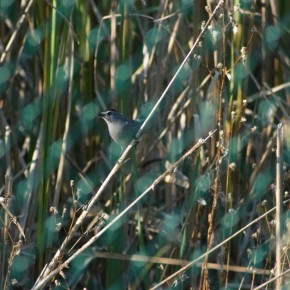

Gray Catbird
To find this bird on campus, you’ll have to be here during the right time. For the Grey catbird only is around during the summer months for breeding. Key identifiers for this bird are the slate gray coloring of its feathers and the black cap that it bears. Another includes the patch of brown color underneath the bird’s tail. The bird is medium sized and is actually a songbird. Again, good luck finding these guys for they are very secretive, but energetic. You’ll most likely hear one before you see one.
Bird’s song (courtesy of TheCornellLab)

